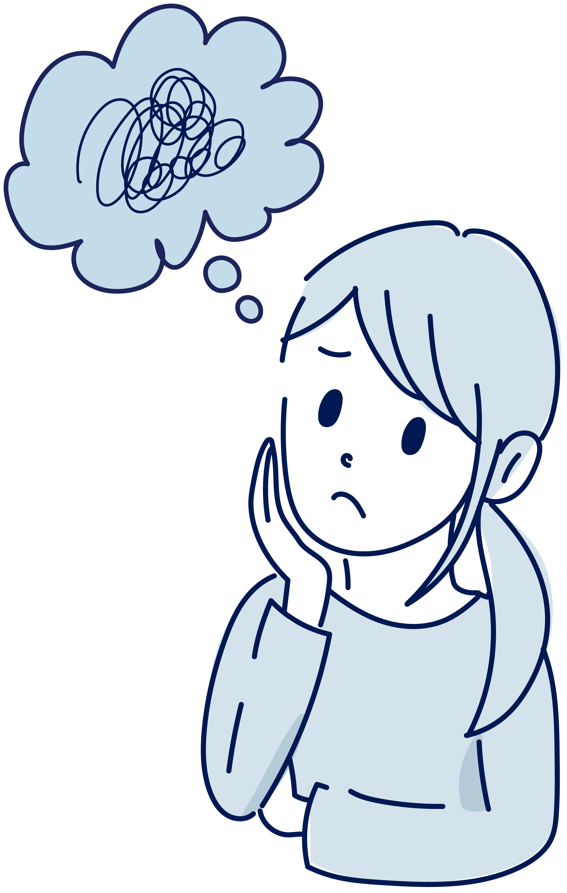

わたしの、
得意なこと。
これまでの経験を振り返り、自分では気づかなかった強みや、自然とできることを言葉にします。
経験の中に、ヒントがある。 ↗20代〜30代のためのキャリア相談
まだ決まって
いなくても、大丈夫。
転職するか、決めていなくても大丈夫。
今の働き方のモヤモヤを、オンラインで完結 ／ 無理な勧誘はありません
うまく言葉にできなくても大丈夫。
今のあなたに近い札を、いくつでも選んでください。
ここは、あなたの気持ちを置ける場所。
一緒に、ゆっくり整理しましょう。

答えを出すのは、今日じゃなくてもいい。
キャリアは、転職することだけじゃない。
今の場所で続けることも、少し立ち止まることも。
あなたらしい選択の、ひとつです。
答えが出るまで、あなたのペースで。
誰かの正解より、あなたの気持ちを。
話しながら、できることを見つけよう。
これまでの経験を振り返り、自分では気づかなかった強みや、自然とできることを言葉にします。
経験の中に、ヒントがある。 ↗やりがい、時間、人との関わり。大切にしたい価値観から、あなたに合う選択肢を一緒に探します。
大切にしたいことを、真ん中に。 ↗漠然とした将来への不安をほどいて、今の自分にできることを、具体的な行動に変えていきます。
今日からできることを、ひとつ。 ↗気持ちが変わると、一歩が変わる。
たとえば、こんな変化。
1 人物と相談テーマを選ぶ → 2 その人の変化を、つまみでたどる
相談テーマ：やりたいことが見つからない
人物イラストはイメージです周りの転職の話を聞くたびに焦る毎日。自分も動かなきゃと思うけれど、方向が見えない。
経験を振り返ると、人の話を聞いて整理することが得意だと気づいた。まずは後輩のサポートに挑戦することに。
この人の相談前 → 対話 → 相談後をたどる
周りと比べて焦るけれど、自分の進む方向が見えない。
これまで、人に頼られたのはどんな場面でしたか？
※ 気持ちの変化を伝える架空のイメージです。数値は測定結果や効果を示すものではありません。
※ サービスの利用イメージを伝える架空のモデルケースです。実際の体験談や成果を示すものではありません。
フォームからご希望を入力。相談したいことは、まだぼんやりしていても大丈夫。
最近感じていることや、これまでの経験をお聞きします。背伸びせず、いつものあなたで。
見えてきた強みや大切にしたいことを整理。これからできる小さな行動を一緒に考えます。
話を聞いて、メモを広げて。
ひとつずつ、一緒に整理します。
今の気持ちを整理することから、はじめてみませんか？
あなたの「これから」を、一緒に。
はじめての、45分のおしゃべり DEMO
制作実験用のデモです。実際の予約・送信は行いません。架空の情報でお試しください。
外部へのデータ送信や予約確定は行いません。
デモ予約が完了しました。
実際の予約や確認メールの送信は行われていません。